| Title | Galaxy |
|---|---|
| Training dataset: | SARS-CoV-2 downsampled sequencing data used to report variants and lineages to national Spanish epidemiologist. |
| Questions: |
|
| Objectives: |
|
| Estimated time: | 1h 15 min |
In this report you will find all the information necessary to follow the steps to analyze SARS-CoV-2 data with Galaxy.
During this training we will following these steps:
From now on, each job we run in Galaxy will have a unique number for identifying each process. This numbers can differ depending on the number of samples and the times you run or delete any process. This training's snapshots were taken using other samples and some process were deleted for any reason, so numbers and names MAY DIFFER. However, the steps you have to run are THE SAME
ViralreconWe are going to upload files using these URLS as seen in the Galaxy tutorial first day
https://zenodo.org/record/5724464/files/SARSCOV2-1_R1.fastq.gz?download=1
https://zenodo.org/record/5724464/files/SARSCOV2-1_R2.fastq.gz?download=1
https://zenodo.org/record/5724464/files/SARSCOV2-2_R1.fastq.gz?download=1
https://zenodo.org/record/5724464/files/SARSCOV2-2_R2.fastq.gz?download=1
Prior to any analysis, we have to download the fasta reference genome using the following URL:
https://zenodo.org/record/5724970/files/GCF_009858895.2_ASM985889v3_genomic.200409.fna.gz?download=1
Also, you will download the bed file of the amplicon primers, which contains the positions in the reference genome of each of the amplicon primers. Use this URL in the window:
https://zenodo.org/record/5724970/files/nCoV-2019.artic.V3.scheme.bed.txt?download=1
Finally, rename and tag the data as follows:
SARSCOV2-1_R1.fastq.gzto SARSCOV2-1_R1with tagS #sample1 and #forwardSARSCOV2-1_R2.fastq.gzto SARSCOV2-1_R2with tagS #sample1 and #reverseSARSCOV2-2_R1.fastq.gzto SARSCOV2-2_R1with tagS #sample2 and #forwardSARSCOV2-2_R2.fastq.gzto SARSCOV2-2_R2with tagS #sample2 and #reverseGCF_009858895.2_ASM985889v3_genomic.200409.fna.gz?download=1 to NC_045512.2 with tag #referencenCoV-2019.artic.V3.scheme.bed.txt?download=1 to Amplicon bed with tag #amplicons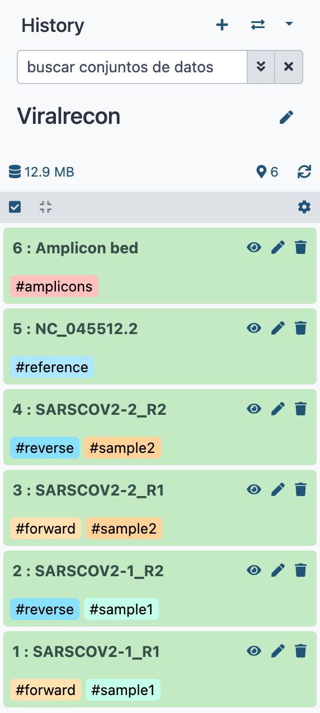
Once we have the raw data, an important step is to analyze the quality of the reads, to know if the reads are worth it. To do this, we have to look for the program "FastQC" in the search bar, then select FastQC Read Quality reports and set the following parameters, same as here:
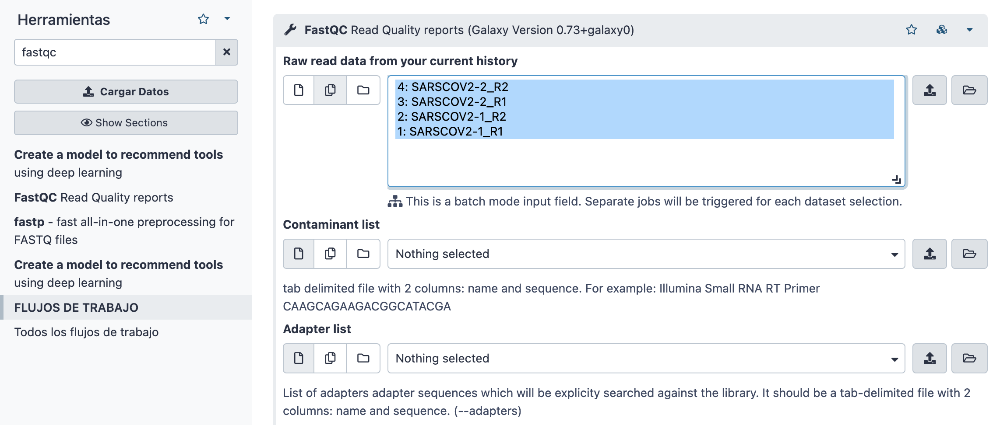
To visualize the information coming from FastQC we just have to select the job of interest. In this case we are interested in the "Web page results" so for the sample we want to see the results we have to click in the eye to visualize galaxy results:
For more information about FastQC output visit FasxstQC website
Question
Once we have check the quality of our reads, it's important to trim low quality nucleotides from those reads, for which we will use Fastp. So, in the search bar you look for fastp and then select "fastp - fast all-in-one preprocessing for FASTQ files". There, we will have to change some parameters ensure the trimming accuracy for this amplicon data. First of all we are going to do the analysis for the sample we gave to you (201569). These are the field we will have to change:
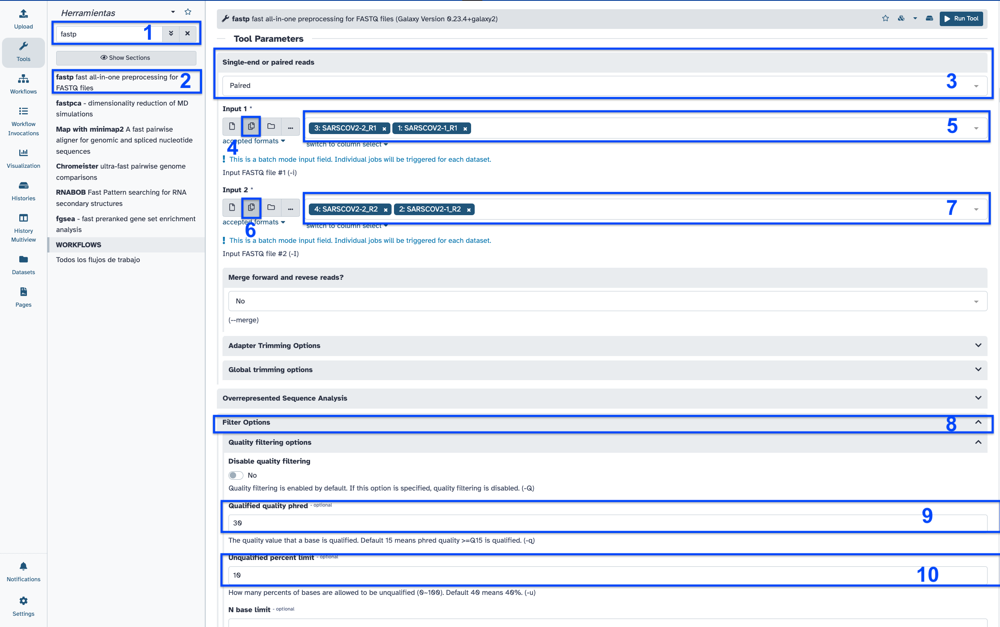
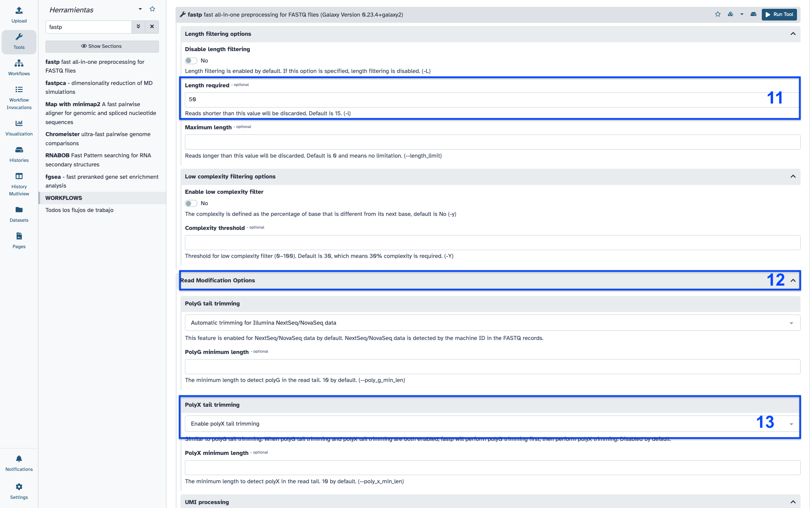
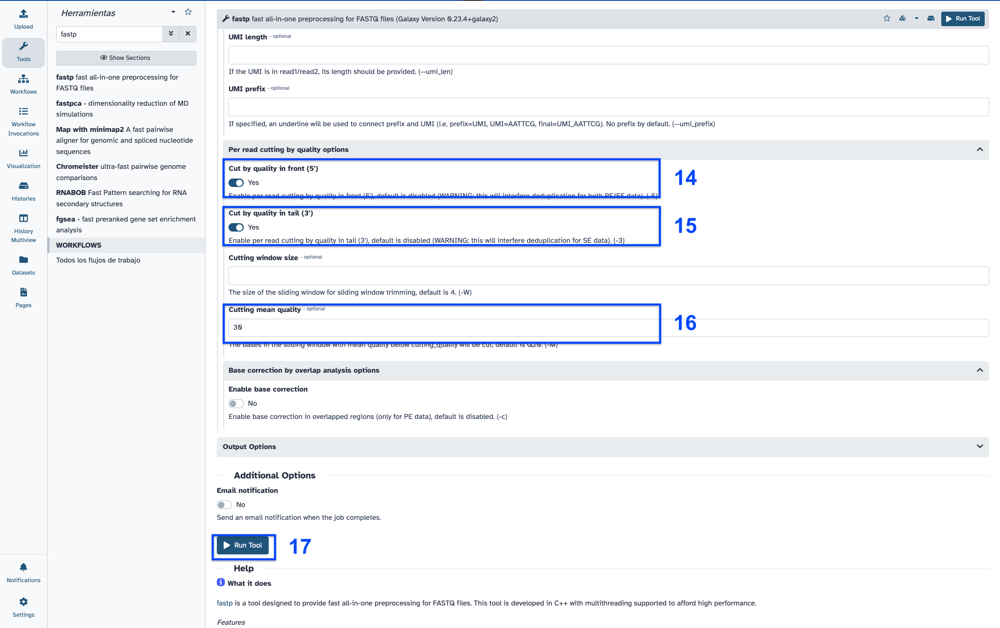
A message will appear, which means that 6 results will be generated:
Once fastp analysis is done, you can see the results by clicking in the eye ("View Data") in the fatp HTML results.
Among the most relevant results, you have the:
For more information about FastQC output visit Fastp github
Question
In order to call for variants between the samples and the reference, it's mandatory to map the sample reads to the reference genome. To do this we need the fasta file of the reference and the Bowtie2 index of that fasta file.
Now we can start with the main mapping process. The first thing we have to do is look for the program "Bowtie2" in the search bar and then select "Bowtie2 - map reads against reference genome". Here we will have to set the following parameters, for the first sample, same as here
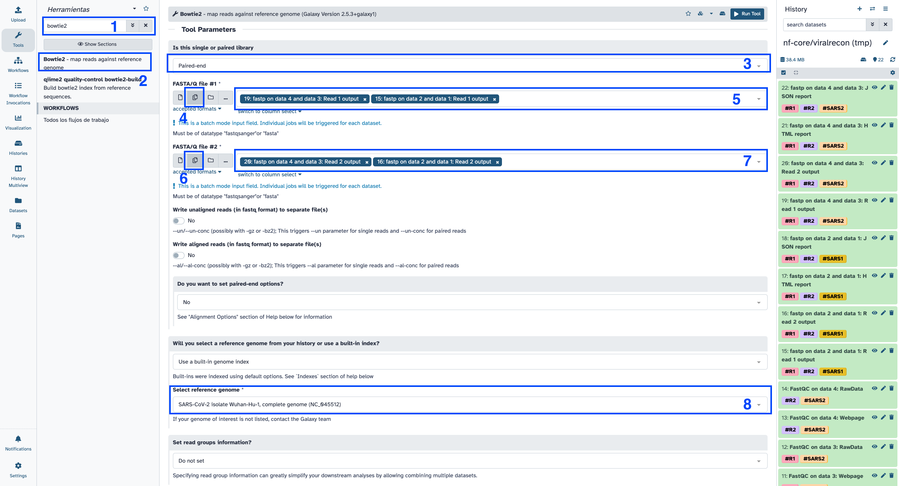
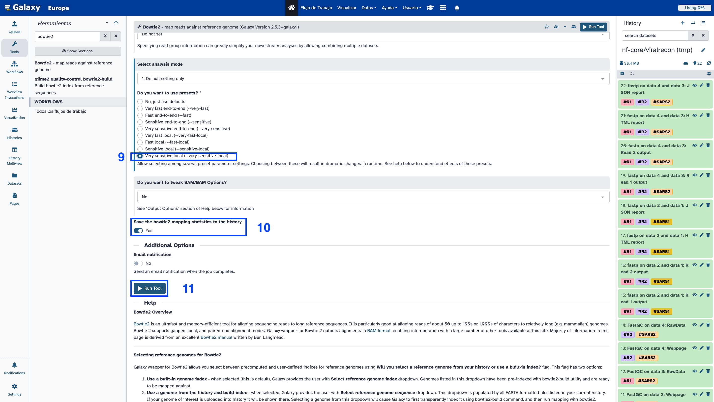
Now we can see the mapping results for the samples. The bowtie2 resulting file is a .bam file, which is not easy to read by humans. This .bam file can be downloaded by clicking in the alignment file and then into download. Then, the resulting .gz file will contain the alignment .bam file that can be introduced in a software such as IGV with the reference genome fasta file.
In our case, the file that can be visualize is the mapping stats file, which contains information such as the percentage of reads that aligned.
Question
The previously shown files give few human readable information, because mapping files are supposed to be used by other programs. In this sense, we can use some programs to extract relevant statistical information about the mapping process.
The first program is Samtools, from which we will use the module samtools flagstat. To do this, we have to look in the search bar for "samtools flagstat" and then select "Samtools flagstat tabulate descriptive stats for BAM datset". There, we just have to select the samples we want to perform the mapping stats (in the example there are two samples, you just have to use one): Bowtie2 on data X, data X and data X: alingment. You can select the samples from the list in Multiple datasets or select the folder icon (Browse datasets) to select the file from the history. Finally, select Execute
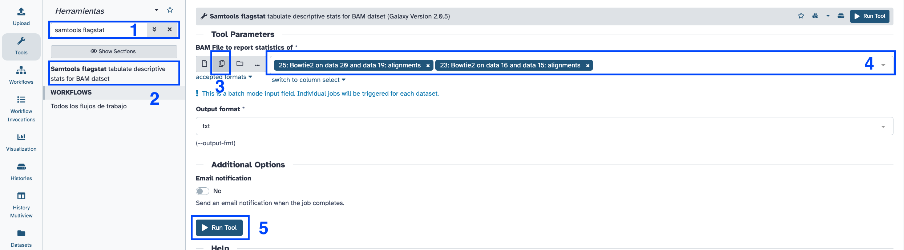
The results of the samtools program gives information about the number and percentage of reads that mapped with the reference genome.
Question
Another program that gives statistical information about the mapping process is Picard. To run this program you just have to search "Collect Wgs Metrics" and then select "CollectWgsMetrics compute metrics for evaluating of whole genome sequencing experiments".
You have to change the following parameters:
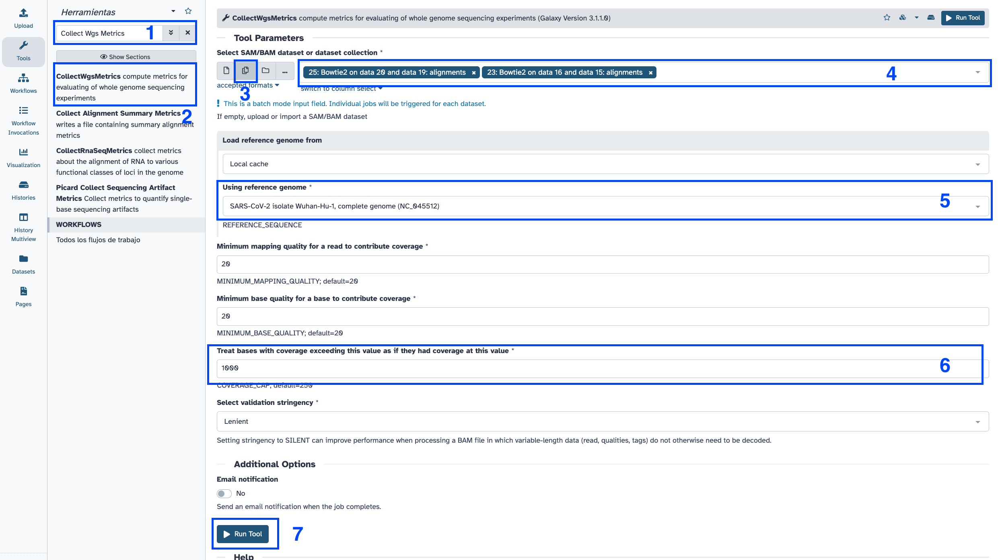
This process will generate one output file per .bam alignment file selected as input.
Picard results consist in quite long files, so the best is to download those results and visualize them in your computer. Yo you have to click in the CollectWgsMetrics job you want to download, and then click in the save button:
Then you just have to open the file with Excell in your computer, and you will see a file with different columns with information about the percentage of the reference genome that is covered by the reads at a specific depth or the mean depth of coverage of the reference genome.
Question
After mapping the reads to the reference genome, we are interested in removing the sequences of the amplicon primers. To do that you will use a program called iVar, and you will need a bed file with the positions of those amplicon primers.
Once you have the bed file, you just have to search for "ivar trim" in the search bar and select "ivar trim Trim reads in aligned BAM". Then follow these steps:
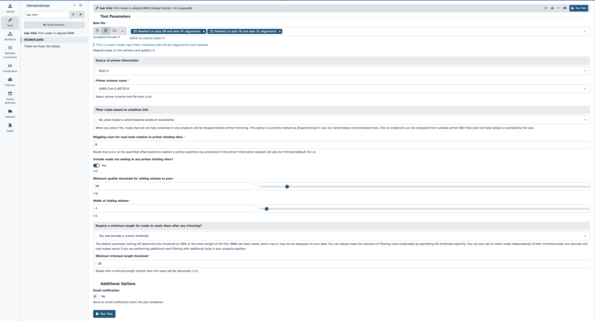
The resulting file from iVar will be a new BAM file where amplicon primer positions will be removed, so there's no result to visualize.
Once we have the alingment statistics and files with amplicon primers trimmed, we can start with the variant calling process.
iVar uses primer positions supplied in a BED file to soft clip primer sequences from an aligned and sorted BAM file. Following this, the reads are trimmed based on a quality threshold(Default: 20). To do the quality trimming, iVar uses a sliding window approach(Default: 4). The windows slides from the 5' end to the 3' end and if at any point the average base quality in the window falls below the threshold, the remaining read is soft clipped. If after trimming, the length of the read is greater than the minimum length specified(Default: 30), the read is written to the new trimmed BAM file.
ivar variants and select ivar variants Call variants from aligned BAM file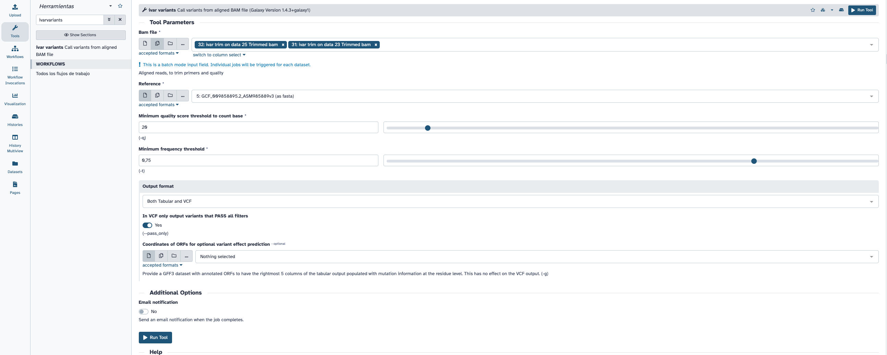
iVar results consist in a VCF file containing all the variants found between the reference and the samples. Each line represents a variant the columns give information about that variant, such as the position in the reference genome, the reference allele, the alternate allele, if that variant passed the filters, and so on.
This variants have passed the minimum quality filter, which we set as 20, and the minimum allele frequency of 75%.
Question
Once we have the variants called, it's interesting to annotate those variants, for which you will use SnpEff. Search for "snpeff" in the searh bar and select "SnpEff eff: annotate variants for SARS-CoV-2", then change the following parameters:
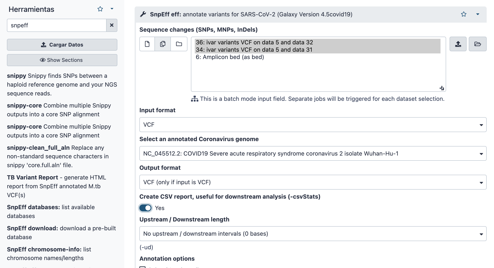
The SnpEff gives three different results, from which the most interesting ones are:
Snpeff eff: Which is a VCF file with the annotation results. It is a very similar file to the ones we saw before for VarScan and Bcftools but with the last column different, containing relevant information about that variant.
Snpeff eff CSV stats: This file is a CSV file that contains statistics about the variant annotation process, such as the percentage of variants annotated, the percentage of variants that are MISSENSE or SILENT, the percentage that have HIGH, MODERATE or LOW effect, and so on.
Question
Once we have the most relevant variants that can be considered to include in the consensus genome, you can start with the consensus genome generation.
The first step consist in including the called variants into the reference genome, for which you will search for "bcftools consensus" in the search bar and then select "bcftools consensus Create consensus sequence by applying VCF variants to a reference fasta file". In this module you have to select:
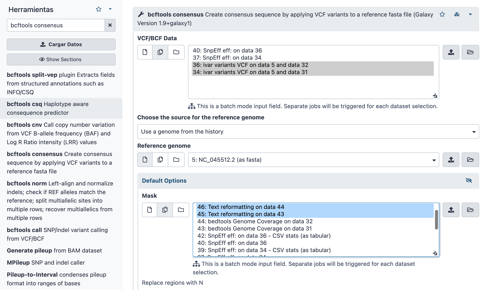
This will just generate a fasta file identical to the reference one, except for those nucleotides that are variants from the VCF file.
At this point, we have the consensus viral genome, but we know that we have filtered the variants based on the coverage, selecting only those that had a coverage depth higher than 10X. So we cannot ensure that the consensus genome doesn't have any variant that we have filter in those regions with a coverage lower than 10X. So the next step is to determine which regions of the reference genome have a coverage lower than 10X.
To do that you will search for "bedtools genomecov" in the search bar and select "bedtools Genome Coverage compute the coverage over an entire genome", the you will have to select the following files:
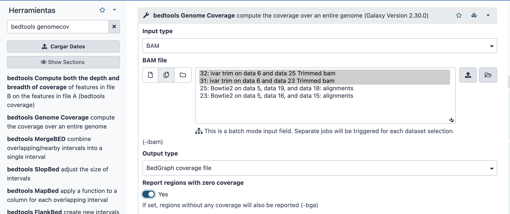
This process will generate a BED file where each genomic position range of the reference genome has the coverage calculated. In this example you can see that for the positions of the reference genome from the nucleotide 2 to 54 they have a coverage of 2X and then will be masked.
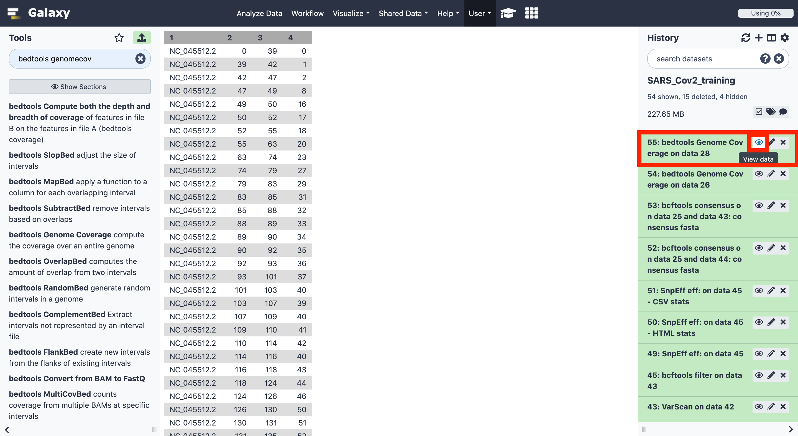
From this resulting file from betdools genomecoverage you are going to select those regions with a coverage lower than 10X. Writing in the search bar "awk" and selecting "Text reformatting with awk", you are going to change:
$4 < 10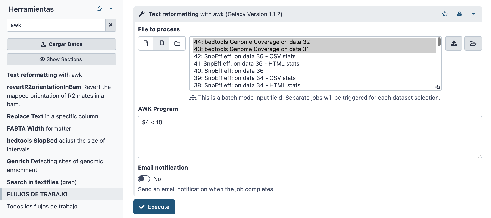
The resulting file is exactly the same as the one in Bedtools genomecoverage but only containing those lines with the genomic region coverage lower than 10X.
Now that you have the consensus genome and the regions with a sequencing depth lower than 10X, you are going to "mask" those regions in the consensus genome replacing the nucleotides in those regions with "N"s. You have to search for "bedtools maskfasta", select "bedtools MaskFastaBed use intervals to mask sequences from a FASTA file" and then select the following parameters:
The resulting file is the consensus genome generated previously but now only contains Ns instead of A, T, G or C in the regions with less than 10X depth of coverage
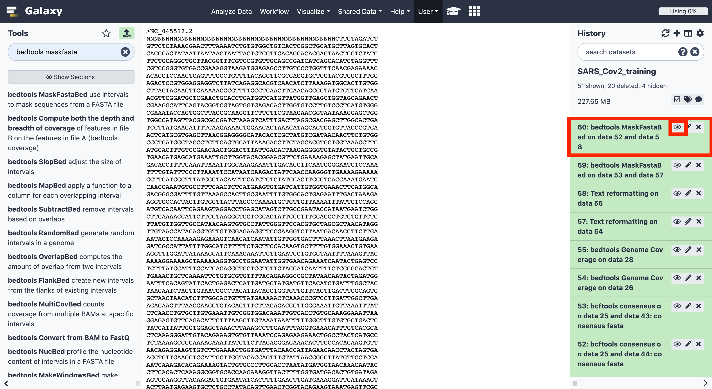
You can download this fasta file and use it to upload it to any public repository such as ENA or GiSaid. Also you can use it to perform phylogenetic trees or whatever else you want to do with the SARS-CoV-2 consensus fasta file.
Now we are going to determine the lineage of the samples. We will use a software called pangolin. We are going to use the masked consensus genomes generated in the previous steps as follows:

Now we are going to have a look to the results from pangolin. As you can see, results are in table format, where you have in first place the reference genome and then de lineage assingned.
Question
If you have any problem following this training and you want to visualize the resulting file you can access them through this URL:
https://usegalaxy.eu/u/s.varona/h/viralrecon
And viralrecon workflfow in:
https://usegalaxy.eu/u/s.varona/w/viralrecon2022